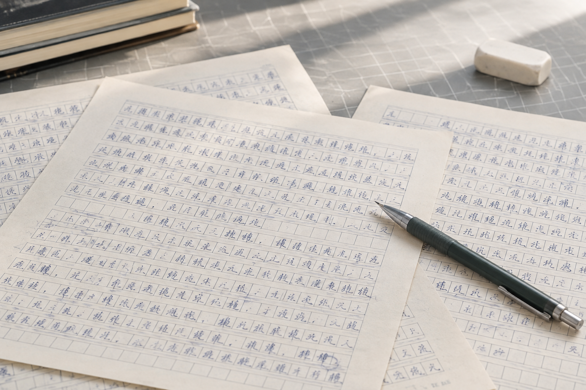

杭州手写字稿反复补录，模仿笔迹里的字距为何越来越散
分几天补写的字稿单看都自然，拼在同一页上却未必协调。问题可能出在采集方式，而不只是某个字写得好不好。

单字采集与连续书写不同
杭州手写字稿整理常会遇到缺字补录。方格中的单字有明确边界，连续文字则会随上下文调整间距。模仿笔迹参考如果只有分散的字格，很难完整呈现段落节奏。需要观察长文时，应另留几段自然连续书写，而不是仅把字格截图排到一起。
补录时记录条件
纸张格线、笔具、书写日期和拍摄比例都值得记下。几天后的补录不必强求每个字都与旧稿尺寸完全相同，但应清楚知道哪些页面属于哪次采集。保留批次信息，日后发现线条或比例差异时才有据可查。
固定落款单独保存
模仿签名与模仿签字关注完整姓名的组合，不能简单从字稿里提取几个独立字代替。自然落款宜保留在原来页面上，同时补充局部图。字库采集页与签名参考页分目录存放，后续使用时就不容易混淆。
旧材料不要被新字稿覆盖
笔迹鉴定资料中，既有自然样本与后补字稿的形成背景不同。即使内容相同，也应分别标注。保留旧文件的原始名称及时间线，新补材料另建记录，比把所有图片重命名成同一套连续编号更能说明来龙去脉。